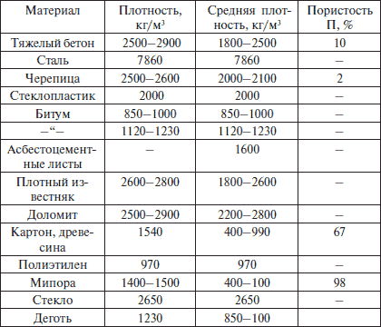
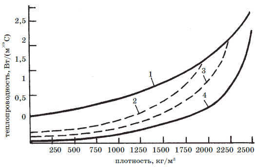

Свойства кровельных материалов.

Для обеспечения нормальных условий эксплуатации здания необходим оптимальный выбор вида кровли в зависимости от уклона крыши, должны быть учтены особенности района строительства и воздействия на кровлю внешних факторов – дождя, снега, ветра, температуры воздуха, солнечной радиации и др. Особое место занимают вопросы соблюдения технологии выполнения кровельных работ и качество применяемых материалов. Выполнение этих требований возможно только при знании как свойств, способов получения, правил хранения и транспортировки материалов, так и условий их работы в конструкциях и сооружениях.
Свойства кровельных материалов можно разделить на следующие группы: физические, гидрофизические, теплотехнические, механические, химические, биологические и особые свойства.
Физические свойстваПлотность – величина, численно равная массе единицы объема вещества: г/см , кг/м , т/м .
Средняя плотность – отношение массы материала к его объему в естественном состоянии, т. е. с пустотами и порами. Величина средней плотности исчисляется в г/см , кг/м , т/м . Средняя плотность не постоянна, т. к. она изменяется в зависимости от пористости материала. Искусственные материалы, а такими является большая часть кровельных материалов, могут быть получены с необходимой заданной средней плотностью.
В табл. 2приведены плотности и пористость различных материалов, применяемых при устройстве кровель.
Таблица 2. Плотность, средняя плотность и пористость кровельных материалов
Относительная плотность выражает плотность материала по отношению к плотности воды (это величина безразмерная).
Строительные материалы по своей структуре пористые. Исключение составляют металлы, мономинералы, стекло. Пористость материалов обычно колеблется в довольно широких пределах – от 0 до 98 %. Для кровельных материалов важное значение имеет не абсолютная величина пористости, а соотношение открытых и закрытых пор. Открытые поры сообщаются с окружающей средой и между собой и при обычных условиях могут заполняться водой. Открытые поры увеличивают проницаемость и водопоглащение материала и ухудшают его морозостойкость, что неприемлемо для кровельных материалов.
Пористый материал обычно содержит как открытые, так и закрытые поры, увеличение закрытой пористости за счет открытой повышает его долговечность. Все свойства материала определяются его составом, строением и, главное, величиной и характером пористости.
Гидрофизические свойстваГигроскопичность – свойство капиллярно-пористого материала поглощать водяной пар из влажного воздуха. Этот процесс, называемый сорбцией, обратимый. Волокнистые материалы со значительной пористостью, например, теплоизоляционные и стеновые, обладают развитой внутренней поверхностью пор и поэтому высокой сорбционной способностью. У кровельных материалов, наоборот, сорбционная способность низкая из-за малой внутренней поверхности пор.
Водопоглащение – способность материала поглощать и удерживать воду. Водопоглащение характеризует в основном открытую пористость, так как вода не проходит в закрытые поры. Все кровельные материалы имеют незначительную величину водопоглащения. Водопоглащение ухудшает основные свойства кровельных материалов: увеличивает относительную плотность, материал набухает, его прочность и морозостойкость снижаются.
Степень снижения прочности материала при предельном его водонасыщении называется водостойкостью. Водостойкость численно характеризуется коэффициентом размягчения К , который показывает степень снижения прочности в результате насыщения материала водой.
Водопроницаемость – способность материала пропускать воду под давлением. Степень водопроницаемости зависит от пористости материала, формы и размеров пор. Чем больше в материале замкнутых пор и пустот, тем меньше его водопроницаемость. Кровельные материалы должны иметь низкую водопроницаемость, они относятся к плотным материалам (их относительная плотность близка к единице). Стекло, сталь, полиэтилен, битум и др. практически водонепроницаемы.
Водонепроницаемость рулонных кровельных материалов определяется по времени, в течение которого образцы не пропускают воду при постоянном гидростатическом движении.
Влажность – это степень содержания влаги в материале. Влажность материала зависит от влажности окружающей среды, свойств и структуры самого материала. В кровельных материалах показатель влажности близок к нулю.
Морозостойкость – способность материала в насыщенном водой состоянии выдерживать требуемое число циклов попеременного замораживания и оттаивания. В зависимости от числа циклов, которые выдержал материал, устанавливается его марка по морозостойкости.
Благодаря высокой плотности и низкому водопоглощению кровельные материалы имеют высокую морозостойкость.
Теплотехнические свойстваТеплопроводность – это способность материала передавать теплоту через свою толщу при наличии раз нос ти температур по обе стороны материала. Тепло про водность зависит от вида материала, пористости, ха рак тера пор, его влажности и плотности, а также от сред ней температуры, при которой происхо дит пе ре – дача теплоты. Значение теплопроводности характеризуется коэффициентом теплопроводности. С увеличением влажности материала коэффициент теплопроводности резко возрастает, т. к. снижаются показатели теплоизоляционных свойств материала ( рис. 12).

Рис. 12. Зависимость теплопроводности неорганических веществ от плотности: 1 – материалы, насыщенные водой; 2, 3 – воздушно-сухие материалы с разной влажностью; 4 – сухие материалы
На заметку
Так как кровельные материалы имеют высокую плотность и не применяются на границе разных температур, теплопроводимость у них значительная. При необходимости теплоизоляции в покрытиях крыш устраивают теплоизоляционные слои.
Огнестойкость– это способность материала выдерживать без разрушений одновременное действие высоких температур и воды. Пределом огнестойкости конструкции называют время (в часах) от начала огневого испытания до появления одного из следующих признаков разрушения: сквозных трещин, обрушения, повышение температуры на необогреваемой поверхности.
По огнестойкости строительные материалы, включая кровельные, делятся на три группы:
• несгораемые,
• трудносгораемые,
• сгораемые.
Несгораемые материалы под воздействием высоких температур или огня не тлеют и не обугливаются (например, черепица); трудносгораемые – с трудом воспламеняются, тлеют и обугливаются, но происходит это только при наличии огня (например, кровельная сталь); сгораемые материалы воспламеняются или тлеют и продолжают гореть или тлеть после удаления источника огня (например, дерево, рубероид, стеклопластик).
Огнеупорность – способность материала противостоять длительному воздействию высоких температур без деформаций и не расплавляясь.
По степени огнеупорности материалы подразделяются на:
• огнеупорные (выдерживают действие температур более 1580 °C),
• тугоплавкие (выдерживают температуру 1360-1580 °C),
• легкоплавкие (выдерживают температуру до 1350 °C).
Теплостойкость и температуроустойчивость – это способность материала сохранять форму, не стекать и не сползать с поверхности конструкции под определенным уклоном и при определенной температуре. Эта температура зависит от структуры материала, его физико-механических свойств, вида и количества заполнителя. Это свойство очень важно для органических вяжущих веществ (битумы, дегти, пластмассы), которые при температуре выше температуры теплостойкости теряют свои вязкие свойства и перестают выполнять роль вяжущего. Например, теплостойкость битумной изоляции толщиной 4 мм составляет 70–90 °C, а битумно-латексной эмульсии толщиной 6 мм – 70 °C.
Температура размягчения характеризует только битумные и дегтевые вяжущие вещества. Это условный показатель, характеризующий изменение вязкости вяжущих веществ при повышении температуры. Так температура размягчения нефтяных строительных битумов 50–70 °C, нефтяных кровельных – 40–95 °C, дегтей высоких марок – 40–70 °C.
Температура вспышки – свойство масел и нефтепродуктов. Это температура, при которой пары нефтепродуктов, нагретых в открытом тигле, образуют с воздухом смесь, вспыхивающую при поднесении к ним пламени. Температура вспышки нефтяных битумов, применяемых в качестве кровельных материалов, 240–300 °C в зависимости от битума. Минимальная температура самовоспламенения – 300 °C.
Линейный коэффициент температурного расширения (ЛКТР) характеризует свойство материала изменять размеры при нагревании. ТКЛР равен относительному удлинению материала при нагревании на один градус.
У каждого материала ЛКТР постоянен. Например, у дерева вдоль волокон – (3–5)?10 , у полимеров – в 10–20 раз больше, у стали – (10–14)?10 .
Механические свойстваВнимание!
Во избежание растрескивания сооружения большой протяженности разрезают деформационными швами, назначаемыми с учетом термического расширения материалов. При устройстве мягких рулонных и мастичных кровельных покрытий, укладываемых по железобетонным плитам, учет ТКЛР имеет большое значение.
Механические свойства – это способность сопротивляться всем видам внешних воздействий с приложением силы. По совокупности признаков различают прочность материалов при сжатии, изгибе, ударе, кручении, истирании, а также твердость, пластичность, упругость.
Прочность – это свойство материала сопротивляться разрушению под действием напряжений, возникающих от нагрузки.
Материалы, находясь в сооружении, могут испытывать различные нагрузки. Характерными для кон струкций крыши являются сжатие, растяжение, изгиб, пластичность и упругость. Такие материалы, как: кровельная сталь, древесина, асбестоцемент – хорошо работают на сжатие, изгиб и растяжение, поэтому их используют в конструкциях, испытывающих эти нагрузки, а бетоны – хорошо работают на сжатие и в 5-10 раз хуже – на растяжение, изгиб, удар, поэтому их используют в конструкциях, работающих на сжатие.
Прочность строительных материалов характеризуется пределом прочности, измеряется в паскалях (Па) и представляется напряжением, соответствующим нагрузке, вызывающей разрушение образца материала.
Предел прочности при сжатии различных материалов колеблется в пределах от 0,5 до 1000 Мпа и более. Прочность зависит также от структуры, плотности, пористости, влажности и направления приложения нагрузки.
Упругость – это свойство материала восстанавливать свою форму и размеры после снятия нагрузки. Пределом упругости считают напряжение, при котором остаточные деформации впервые достигают минимальной величины, установленной техническими условиями на данный материал.
Хрупкими называют материалы, разрушающиеся при статических испытаниях при очень малых остаточных деформациях. К хрупким материалам относятся чугун, природный камень, бетон, керамические материалы, асбестоцемент.
Пластичными называют материалы, которые при статических испытаниях до момента разрушения получают значительные остаточные деформации. Пластичность является весьма важным и положительным качеством материала.
К пластичным материалам относятся малоуглеродистая сталь, медь, мастики, пасты, битумы и дегти при положительных температурах. Большинство пластичных материалов при понижении температуры приобретают хрупкие свойства, т. е. у них происходит переход от пластического разрушения к хрупкому. Так ведут себя битумные материалы, металлы и др.
Трещиностойкость – это снижение упругопластических деформаций при отрицательных температурах. Исчезает однородность материала на его поверхности, что очень важно для материалов, используемых при устройстве оболочки крыши. Трещиностойкость характеризуется коэффициентом трещиностойкости.
Химические свойстваК физико-химическим свойствам отдельных материалов – битумов, дегтей, природных и синтетических смол, масел – относится способность образовывать с водой жидкие дисперсии – эмульсии. Эмульсией называется система из двух несмешивающихся жидкостей, где капельки одной жидкости (дисперсная фаза) распределены в другой (дисперсная или внешняя среда).
Химическая стойкость – это способность материалов противостоять разрушающему действию кислот, щелочей, растворенных в воде солей и газов, органических растворителей (ацетона, бензина, масел и др.). Химическая стойкость характеризуется потерей массы материала при действии на него агрессивной среды в течение определенного времени. Например, битум БНК 45/180 при выдерживании в 5 %-й соляной кислоте за 150 суток теряет 1 % массы, в 5 %-й серной кислоте – 0,8 %.
Щелочестойкими должны быть материалы, стойкие к воздействию щелочей, например пигмента, применяемого для окрашивания металлической кровли.
Сероводород и углекислый газ в больших количествах содержится в воздухе, особенно в районах промышленных предприятий. Поэтому для окрашивания металлических кровель нельзя применять краски, в состав которых входят свинец и медь, так как последние, вступая в реакцию с сероводородом, чернеют.
Атмосферостойкость – способность материала длительное время сохранять свои первоначальные свойства и структуру после совместного воздействия погодных факторов: дождя, света, кислорода воздуха, солнечной радиации, колебаний температуры.
Оценивается атмосферостойкость временными показателями: час, сутки, месяц, год. Например, органические вяжущие, битумы и дегти, подвергаясь атмосферным воздействиям, ускоряют свое старение, т. е. становятся хрупкими и теряют водоотталкивающие свойства за счет нарушения целостности гидроизоляционного ковра. Атмосферостойкость находится в прямой зависимости от свойств материала и его состава.
Биологические свойстваБиологические свойства – это свойства материалов и изделий сопротивляться разрушающему действию микроорганизмов. Так в Средней Азии материалы, содержащие битум, разрушаются под действием микроорганизмов, которые для своего развития поглощают органические составляющие битума. Биостойкость битумных и деревянных материалов повышается специальными добавками – антисептиками. Кроме этого органические материалы необходимо оберегать от увлажнения.
Особые свойстваНа заметку
Следует отметить, что биостойкость материалов на основе дегтевых вяжущих выше биостойкости битумных, т. к. дегти содержат токсичную карболовую кислоту.
Растворимость – способность материала растворяться в воде, бензине, скипидаре, масле и других жидкостях-растворителях. Растворимость может быть как положительным, так и отрицательным свойством. Если материалы под воздействием растворителей разрушаются, то растворимость в этом случае играет отрицательную роль.
Битумы обладают способностью растворяться в бензине. Это положительное свойство растворимости битума используется при приготовлении холодных битумных мастик, наносимых на изолируемые поверхности тонким слоем.
Паропроницаемость – свойство материала пропускать водяные пары, содержащиеся в воздухе, под действием разности их парциальных давлений на противоположных поверхностях слоя материала. Водяные пары стремятся попасть в область меньшего давления, т. е. на сторону слоя материала с меньшей температурой. Этим объясняется увлажнение изоляции, применяемой для поверхности с отрицательными температурами. Влага, проникая в слой изоляции с теплой стороны, увлажняет ее, а при отрицательной температуре – замерзает, что вызывает ухудшение свойств изоляции и ее разрушение. Кровельные гидроизоляционные мягкие материалы хорошо сопротивляются проникновению в них влаги, т. е. они паропроницаемы.
Паропроницамость характеризуется коэффициентом паропроницаемости, размерность которого – кг/(м?ч?Па).
Газопроницаемость – свойство материала, характеризуемое количеством газа, проходящего через образец определенного размера при заданном давлении.
Строительные материалы с большой пористостью обладают газопроницаемостью. Степень газопроницаемости зависит еще от размера и характера пор.
Усадка – это уменьшение линейных размеров и объема под воздействием изменения температуры, влажности, солнечной радиации или в результате процессов, происходящих в материале, таких, как старение, вулканизация и полимеризация у полимерных материалов. У рулонных кровельных материалов (бризол, изол, различные пленки) удлинение может быть относительным и остаточным. Усадку выражают в процентах от первоначального размера изделия.
Набухание – свойство, противоположное усадке, вызываемое увлажнением материала, и оно намного ниже усадки.
У кровельных материалов набухание незначительно, т. к. они приближаются к абсолютно плотным материалам с водопоглощением близким к нулю. Материал основания рулонных кровельных материалов (картон) подвержен явлениям набухания.
Адгезия – сопротивление отрыву или сдвигу материала, нанесенного на изолируемую поверхность. Кровельные рулонные и мастичные материалы должны обладать высокой адгезийной способностью. Адгезию выражают величиной силы, приложенной к материалу с целью его отрыва или сдвига от изолируемой поверхности. Например, адгезия к бетону холодной асфальтовой мастики ИИ-20 при 20 °C составляет 0,23 МПа, а при предварительной огрунтовке пастой – 0,43 МПа. Вывод – состояние гидроизолируемой поверхности существенно влияет на величину адгезии.